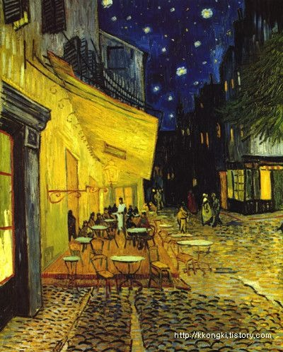
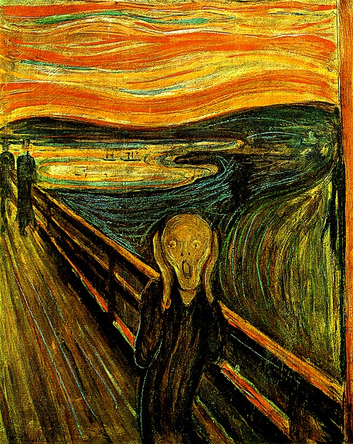
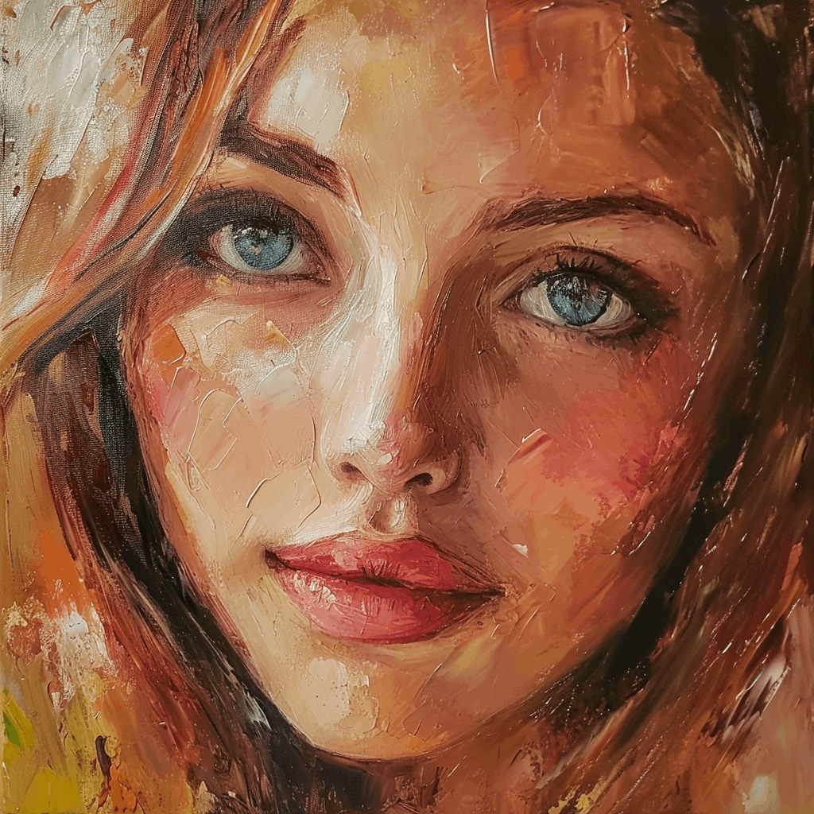
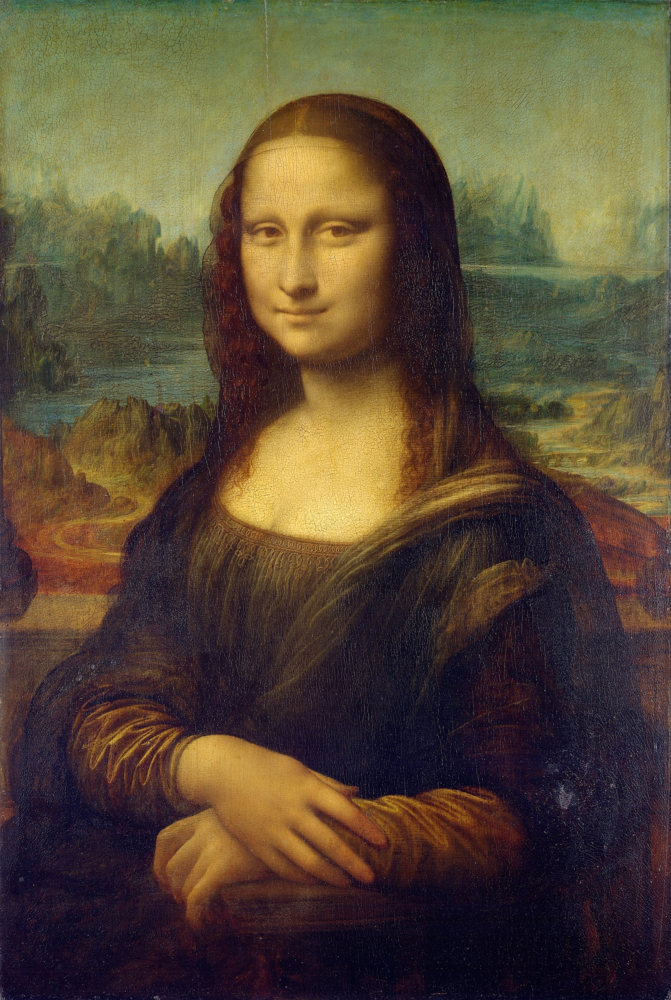

고흐가 정신병원에서 바라본 밤하늘을 그린 후기 인상주의 걸작입니다.
200,000,000원

뭉크가 겪은 실존적 불안과 공포를 그린 표현주의 대표작입니다. 그의 불안한 내면과 예술적 열정을 역동적으로 표현했습니다.
250,000,000원

피카소가 그의 연인 마리 테레즈를 그린 입체주의 걸작입니다. 꿈을 꾸는 여인의 평온함과 관능적인 아름다움을 입체적으로 표현했습니다.
450,000,000원

신비로운 미소와 보는 사람의 시선을 따라오는 듯한 눈빛이 특징입니다.
300,000,000원